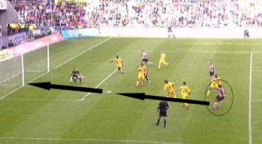
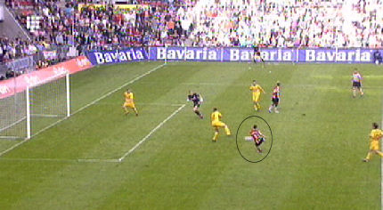

|
PSV
-Roda JC (4-1) 15 oktober 2006
|
De 600 meegereisde Rodasupporters kunnen al gauw juichen....
...want in de 4e min. scoort de Fauw 0-1 na slecht uitverdedigen van PSV.
Bij een vrije trap is er een opstootje tussen Alex en Kah.
In de tweede helft wordt de druk van PSV vrijwel onhoudbaar. Met name
oud-Rodaspeler Kone krijgt veel kansen om te scoren. Toch is het hier
Bodor die vanaf 22 meter bijna 0-2 scoort. De bal belandt helaas op de lat.
De Fauw hangt aan het shirt van Farfan. Te licht voor een penalty.
Overtreding van Saeijs op Kone. Gele kaart voor Jan-Paul.

Farfan schiet uit de draai in de uiterst linkse hoek; 1-1, (75').
Saeijs mag zijn aanvoerdersband inleveren na zijn tweede gele kaart in
vijf minuten. Een zware straf voor een vrij lichte overtreding op Beerens.
Uit de erop volgende vrije trap scoort Alex met een nonchalant hakballetje
2-1, (77').
Van Tornhout alleen op PSV doelman Gomez af. Hij wordt echter door
Kromkamp van de bal gezet.
In de 90e min. beslist Aissati de wedstrijd definitief: 3-1. Een buitenspel
doelpunt. 
Met deze volley schiet Beerens PSV naar een geflatteerde 4-1, (92').
Wedstrijdverslag: In het Philips-stadion kwam Roda al na
vier minuten op voorsprong. Rechtsback Davy De Fauw stoomde op over de
rechterflank en kwam na een goede combinatie alleen voor doelman Gomes. Hij
rondde de kans bekwaam af: 1-0.
PSV ging meteen op zoek naar de gelijkmaker. Maar de Roda hield stand tot aan
het slotkwartier. Mede dankzij enkele mooie reddingen van doelman Vladan Kujovic.
Zelf (o.a. via Bodor en Oper) kreeg men ook nog een aantal goede mogelijkheden.
In de 74e bracht invaller Jefferson Farfan de stand op 1-1. Vervolgens kreeg
Roda-verdediger Jan-Paul Saeijs zijn tweede gele kaart, dus rood, schoot
Boldizsár Bodor op de lat en kwam PSV in de 77e minuut via Alex op een 2-1
voorsprong. Roda JC kreeg nog één mogelijkheid op de 2-2, maar Van Tornhout kon
een rush vanaf de eigen helft niet afmaken.
In de slotminuten van het duel besliste PSV het duel definitief. Dankzij
doelpunten door Ismail Aissati, 3-1 90e minuut, en Roy Beerens, 4-1 92e minuut.
PSV : Gomes, Jan Kromkamp, Alex, Carlos Salcido, Timmy Simons, Phillip Cocu,
Edison Méndez, Ibrahim Afellay, Arouna Koné, Michael Lamey en Diego Tardelli.
Roda JC : Vladan Kujovic, Jan-Paul Saeijs, Pa Modou Kah, Davy De Fauw, Marcel de
Jong, Boldizsár Bodor, Marcel Meeuwis, Kemy Agustien, Sekou Cissé, Andres Oper
en Adil Ramzi.
Doelpunten
Davy De Fauw 04e minuut 0 - 1
Jefferson Farfán 74e minuut 1 - 1
Alex 77e minuut 2 - 1
Ismail Aissati 90e minuut 3 - 1
Roy Beerens 92e minuut 4 - 1
Kaarten
Geel: Michael Lamey PSV
Geel: Phillip Cocu PSV
Geel: Jan-Paul Saeijs Roda JC
Geel: Vladan Kujovic Roda JC
Geel/rood: Jan-Paul Saeijs Roda JC
Wissels
Jefferson Farfán 46eminuut Ibrahim Afellay
Roy Beerens 46eminuut Diego Tardelli
Ismail Aissati 66eminuut Michael Lamey
Ger Senden 79eminuut Boldizsár Bodor
Jamaïque Vandamme 87e minuut Kemy Agustien
Scheidsrechter : Ruud Bossen
Toeschouwers 32000
© Koempels Pleasure Dome
|